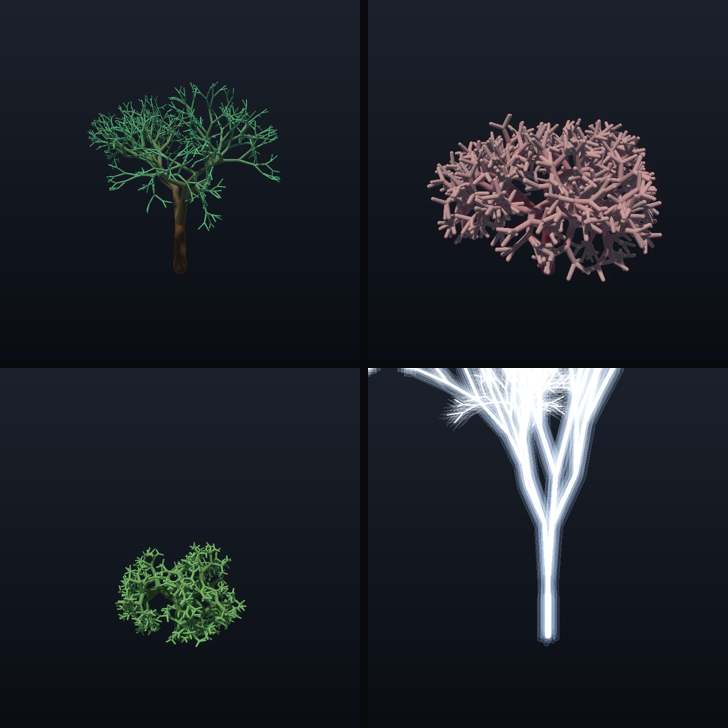

/ lab
Work Graphs で育てる ── GPU が枝を再帰生成する
GPU 自身が枝を再帰的に生成して、樹・珊瑚・稲妻を育てるプロシージャル生成デモです。
2024 年に DirectX 12 に入ったばかりの新しい仕組み Work Graphs（GPU 上のシェーダが自分で次の仕事を生成・展開できる）を使いました。まだ実例の少ない新 API に「再帰プロシージャル生成」という題材を載せて、動くところまで実装しています。生成した形状は SDF レイマーチで描画。
作ったもの
1 本の種から、GPU が枝を再帰的に枝分かれさせて構造を育てます。パラメータ（分岐数・広がり・長さ比・ねじれ・深さ・色）を 変えるだけで、同じ再帰グラフから樹・珊瑚・藪・稲妻が出てきます。下は根から先端へ育っていく様子で、 この「育つ」動き自体が Work Graphs の再帰展開そのものです。

なぜ Work Graphs か
従来の GPU 実行は、CPU が「このシェーダを何回動かす」と回数を固定で決めて並べる形でした。 Work Graphs（2024）は、GPU 上のシェーダのノードが自分で次のノードを起動できる ── 親ノードが子ノードを生み、 それがまた子を生む、という再帰・データ依存の仕事の増え方を GPU 側で完結できます。
枝分かれは「どれだけ仕事が増えるか実行時に決まる再帰」そのもので、Work Graphs の本領がまっすぐ効く題材です。 まだ使用例が少ない新 API に、この生成を載せて動かすところまで実装したのが主眼です。
仕組み
- 生成 (Work Graph):
Branchノードが枝 1 本を capsule バッファへ atomic append し、深さが残っていれば円錐状に散らした子 record を自分自身へ emit（NodeMaxRecursionDepth）。GPU だけで再帰的に木構造が展開される。 - 描画 (compute): 生成された capsule 群の union SDF をスフィアトレース。法線・soft shadow・AO で陰影を付け、発光プリセットは emissive + bloom で光らせる。
- 成長アニメ: 各枝に「生まれる深さ割合」を持たせ、成長前線を根 → 先端へ動かして伸ばす。
その場でいじれる
ビルドした実行ファイルはそのまま起動すると窓が開き、プリセット（樹・珊瑚・藪・稲妻）や生成パラメータ （分岐数・深さ・広がり・ねじれ・色・発光）を窓の中でその場で変えられます。パラメータを動かすたびに Work Graph が即座に構造を再生成します。ドラッグで回転、ホイールでズーム、成長アニメの再生・リセットも可能。 コマンド引数は不要で、画像や動画を書き出すときだけフラグを使います。内部描画解像度を窓と分けて上げ下げできる ので、負荷も実機で調整できます。